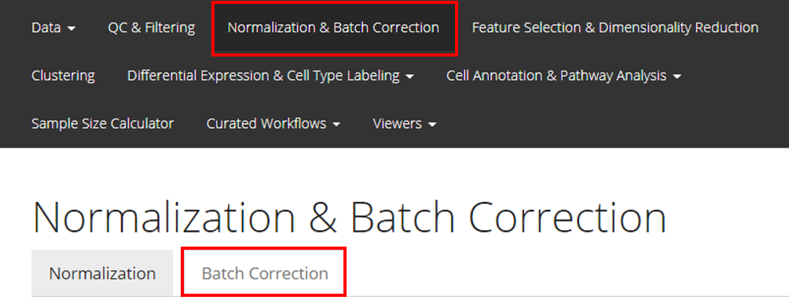
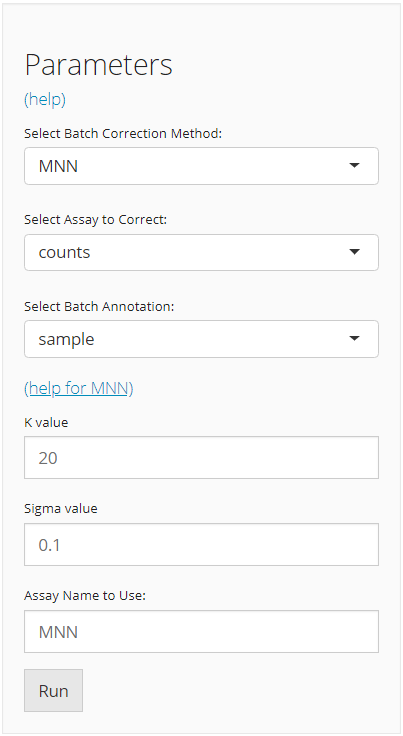

Introduction
This guide helps users with performing batch correction when necessary. SingleCellTK provides 11 methods that are already published including BBKNN, ComBatSeq, FastMNN, MNN, Harmony, LIGER, Limma, Scanorama, scMerge, Seurat integration and ZINBWaVE. All of these methods are available to use through our shiny ui application as well as through the R console environment through our wrapper functions.
These methods accept various type of input expression matrices (e.g. raw counts or log-normalized counts), and generate either a new corrected expression matrix or a low-dimensional representation. Users should choose a function according to their needs. More detailed instructions on how to use these methods either through the shiny ui application (select “Interactive Analysis”) or through the R console (select “Console Analysis”) are described below:
Workflow Guide
Entry of the Panel
From anywhere of the UI, the panel for normalization and batch correction can be accessed from the top navigation panel at the boxed tab. After this, click on the second boxed tab to enter the sub-page for batch correction.

Perform the Correction
The UI is constructed in a sidebar style, where the left-sided sidebar works for selecting method, setting the parameters and running the batch correction, and the right part main panel is for visualization checking.

For running any types of batch correction, there are always three essential inputs that users should be sure with:
- The batch correction method - selection input “Select Batch Correction Method”. All methods supported are listed as options, in the alphabetic order.
- The data matrix to correct - selection input “Select Assay”. In terms of batch correction, SCTK always requires a full-sized feature expression data (i.e. assay) as a valid input.
- The annotation for batches - selection input “Select Batch Annotation”. Users will choose from the cell annotation list. The chosen annotation class should be able to define from which batch each cell sampled. Usually,
"Sample"or"sample", as the preprocessing steps generate this annotation by default.
After the batch correction method is confirmed, the lower part will dynamically switch to the method specific settings. Different types of method have various parameter requirements, and various forms of output. For the detailed help information of each method, users can go to reference page and click on the function that stands for the method chosen, or click on the “(help for {method})” link in the UI.
Visualization

SCTK adopts two approaches to demonstrate the effect of batch correction:
Explanation: Explained Variance Plot
There will be three columns in the plots for the variance explained. The third one is for the variance explained by batch division, the second is for that of an additional condition, which is optional, and the first one is the variance explained by combining both annotations. The additional condition is usually an annotation that indicates the differences between cells that should not be eliminated, such as cell types and treatments. In the first plot, the combined variance should ideally be close to the sum of the two types of variance. (i.e. the height of the first column should be closed to the sum of the heights of the other two) As a result that makes sense, the changes between the two plots in the second column should not be too much, while the third column should be largely eliminated after correction.
Explanation: PCA plots
In the PCA plots, cells (i.e. dots) will be labeled with different colors to mark the batch belonging, and different shapes to mark for the additional condition, which was mentioned in the previous paragraph. Usually in the result, in the plot for the output, users can observe that different colors of dots are mixed up together, while different shapes are still grouped into separate clusters.
Visualization Parameters
- The data matrix used for correction - selection input “Original Assay”. User should choose the one that was used when generating the result they want to visualize.
- The batch annotation used for correction - selection input “Batch Annotation”. User should choose the one that was used when generating the result they want to visualize.
- The additional condition - selection input “Additional Condition (optional)”. See the explanation in the previous paragraphs. Such a condition that makes the most sense does not always exist, so it becomes optional in SCTK.
- The result to visualize - selection input “Corrected Matrix”. Only the results generated in the current SCTK UI session will be gathered in the option list here.
Before Correction
To run the pipeline, the most basic requirements are:
- An assay of expression value, usually pre-processed.
- The annotation of the batches.
As we adopt SingleCellExperiment (sce) object through out the whole SCTK for a collection of all matrices and metadatas of the dataset of interests, the assay to be corrected, called "assayToCorr", has to be saved at assay(sce, "assayToCorr"). Meanwhile, the batch annotation information has to be saved in a column of colData(sce).
Note that the batch annotation should better be saved as a
factorin thecolData, especially when the batches are represented by integer numbers, because some downstream analysis are likely to parse the non-character and non-logical information as continuous values instead of categorical values.
Choosing a Method
As mentioned in the introduction, our 11 methods vary in type of input and output. Input type for the expression matrix could be raw counts, log-transformed counts or scaled counts. Users need to make sure the assay being used is of the correct type. The output matrix can be an expression matrix (assay), a low-dimensional representation (reducedDim), or a subset features of expression matrix (altExp). Users need to choose a method that produce a matrix that fits in their analysis.
Example
1. Prepare an SCE object with multiple batches
Here we present an example dataset that is combined from “pbmc3k” and “pbmc4k,” originally available from package TENxPBMCData, which you can import by a function called importExampleData().
library(singleCellTK)
pbmc6k <- importExampleData('pbmc6k')
pbmc8k <- importExampleData('pbmc8k')
print(paste(dim(pbmc6k), c('genes', 'cells')))
print(paste(dim(pbmc8k), c('genes', 'cells')))SCTK has a function called combineSCE(), which accepts a list of SCE objects as input and returns a combined SCE object. This function requires that the number of genes in each SCE object has to be the same, and the gene metadata (i.e. rowData) has to match with each other if the same fields exist. Therefore, we need some pre-process for the combination. Users do not necessarily have to follow the same way, depending on how the raw datasets are provided.
## Combine the two SCE objects
sce.combine <- combineSCE(sceList = list(pbmc6k = pbmc6k, pbmc8k = pbmc8k), by.r = names(rowData(pbmc6k)), by.c = names(colData(pbmc6k)), combined = TRUE)
table(sce.combine$sample)In this manual, we only present a toy example instead of a best practice for real data. Therefore, QC and filtering are skipped.
Additionally, most of the batch correction methods provided require a log-normalized assay as input, users can check the required assay type of each method by looking at its default setting. (i.e. if by default useAssay = "logcounts", then it requires log-normalized assay; else if by default useAssay = "counts", then the raw count assay.)
## Simply filter out the genes that are expressed in less than 1% of all cells.
rowData(sce.combine)$expPerc <- rowSums(assay(sce.combine) > 0) / ncol(sce.combine)
sce.filter <- subsetSCERows(sce.combine, rowData = "expPerc >= 0.01", returnAsAltExp = FALSE)
print(sce.filter)
sce.small <- sce.filter[sample(nrow(sce.filter), 800), sample(ncol(sce.filter), 800)]
sce.small <- scaterlogNormCounts(inSCE = sce.small, useAssay = 'counts', assayName = 'logcounts')
print(sce.small)2. Run a batch correction method on the prepared SCE object
The basic way to run a batch correction method from SingleCellTK is to select a function for the corresponding method, input the SCE object, specify the assay to correct, and the batch annotation.
For example, here we will try the batch correction method provided by Limma, which fits a linear model to the data.
sce.small <- runLimmaBC(inSCE = sce.small, useAssay = 'logcounts', batch = 'sample', assayName = 'LIMMA')
print(sce.small)3. Visualization
In this documentation, we provide three ways to examine the removal of batch effect, in terms of visualization.
- Plot the variation explained by the batch annotation and another condition.
This functionality is implemented in plotBatchVariance(). It plots a violin plot of the variation explained by the given batch annotation, an additional condition, and the variation explained by combining these two conditions.
This plot would be useful for examining whether the existing batch effect is different than another condition (e.g. subtype) or is confounded by that. However, the additional condition labels (e.g. cell types) do not necessarily exist when batch effect removal is wanted, so only plotting the variation explained by batches is also supported.
plotBatchVariance(inSCE = sce.small, useAssay = 'logcounts', batch = 'sample', title = 'Variation Before Correction')
plotBatchVariance(inSCE = sce.small, useAssay = 'LIMMA', batch = 'sample', title = 'Variation After Correction')- Plot the mean expression level of each gene separately for each batch.
This functionality is implemented in plotSCEBatchFeatureMean(). The methodology is straight forward, which plots violin plots for all the batches, and within each batch, the plot illustrates the distribution of the mean expression level of each gene. Thus the batch effect can be observed from the mean and standard deviation of each batch.
- Plot a dimension reduced components to see the grouping of cells
There is no function special for batch correction, but this can be achieved simply by using the dimension reduction calculation functions (e.g. scaterPCA(), getUMAP() and getTSNE()) and plotSCEDimReduceColData().
sce.small <- scaterPCA(inSCE = sce.small, useAssay = 'logcounts', reducedDimName = 'PCA')
plotSCEDimReduceColData(inSCE = sce.small, colorBy = 'sample', reducedDimName = 'PCA', title = 'PCA Before Correction')
sce.small <- scaterPCA(inSCE = sce.small, useAssay = 'LIMMA', reducedDimName = 'PCA_LIMMA')
plotSCEDimReduceColData(inSCE = sce.small, colorBy = 'sample', reducedDimName = 'PCA_LIMMA', title = 'PCA After Correction')If the cell typing is already given, it is strongly recommended to specify shape = {colData colname for cell typing} in plotSCEDimReduceColData() to visualize the grouping simultaneously.
Method Reference
| Method | Function | Input Type | Output Type |
|---|---|---|---|
| BBKNN [1] | runBBKNN() |
Scaled | reducedDim |
| ComBatSeq [2] | runComBatSeq() |
raw counts | assay |
| FastMNN [3] | runFastMNN() |
log-normalized | reducedDim |
| MNN [3] | runMNNCorrect() |
log-normalized | assay |
| Harmony [4] | runHarmony() |
log-normalized | reducedDim |
| LIGER [5] | runLIGER() |
raw counts | reducedDim |
| Limma [6] | runLimmaBC() |
log-normalized | assay |
| Scanorama [7] | runSCANORAMA() |
log-normalized | assay |
| scMerge [8] | runSCMerge() |
log-normalized | assay |
| Seurat Integration [9] | runSeuratIntegration() |
raw counts | altExp |
| ZINBWaVE [10] | runZINBWaVE() |
raw counts | reducedDim |